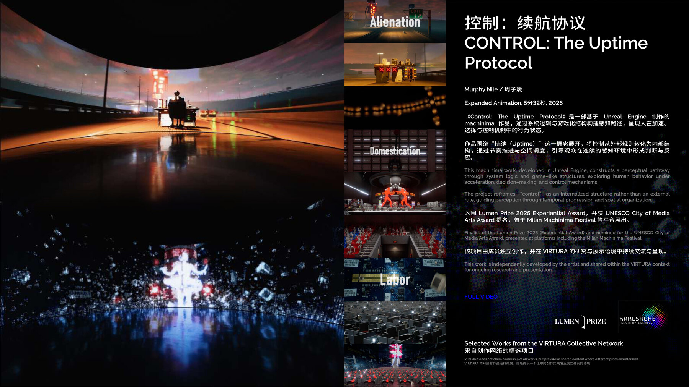

Spatial Image
Team Work
Drop Flow / 滴流
Spatial image, public performance, live visual system, and digital-natural narration.
VIRTURA Collective
VIRTURA is a decentralized creative network working across spatial image, live visual systems, digital exhibition, research, and artist collaboration.
Works
Spatial image, public performance, live visual system, and digital-natural narration.

Time structure, rhythm, frequency, and the internal relation between sound and image.

Observation, environment, body, and symbiotic relation through spatial visual systems.
People

Cross-media artist working across real-time 3D, machinima, and audiovisual systems.

Spatial visuals and interaction design through immersive installation and perceptual experience.
Programs